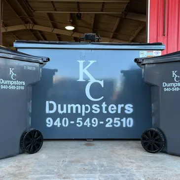

This page keeps the tone practical: what is offered, how service works, how payment is handled, and what customers should do when something goes wrong.

The current live business already emphasizes communication, weekly pickup timing, and quick problem reporting. This page keeps that same logic but packages it better.
Customers are assigned a route day when service starts. The page tells them not to guess and gives them a simple way to verify or update contact info.
Autopay is presented as the preferred method, with an alternate office path for online or phone payment when needed.
Missed pickup, damaged cart, overflow, and account questions can be submitted through one reporting form that would later feed the ticket board.
Route days sometimes change because of optimization, weather, or equipment issues. Customers should keep an active email address on file so the office can send updates when needed.